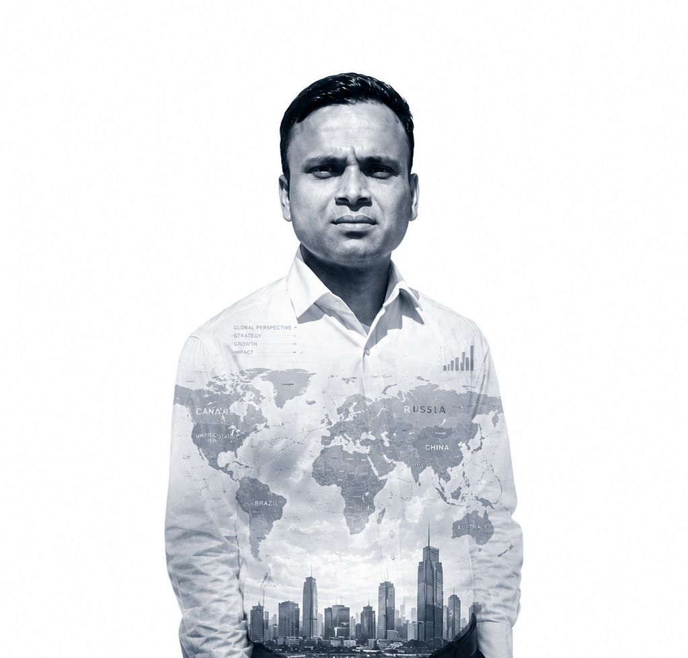
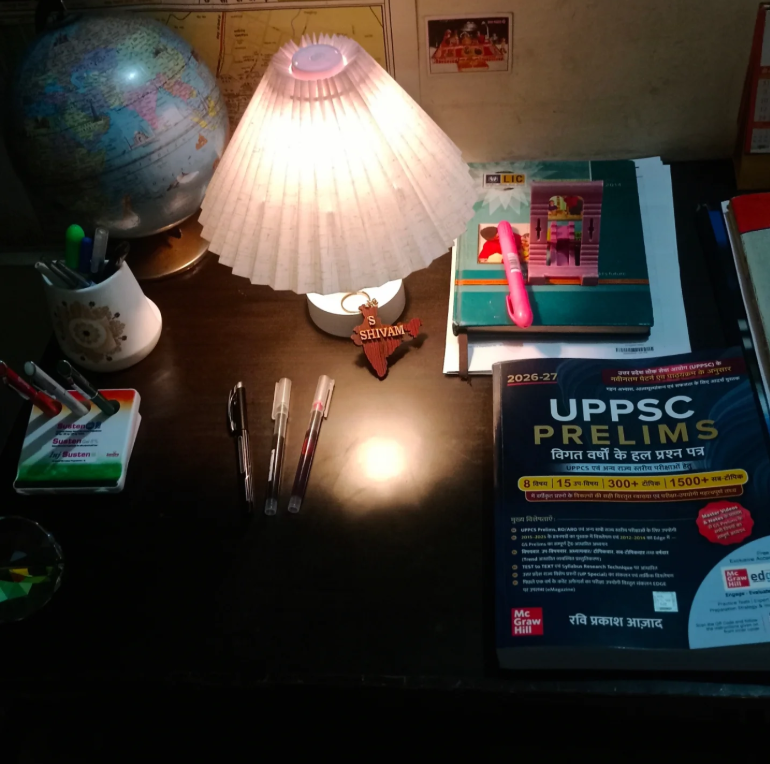
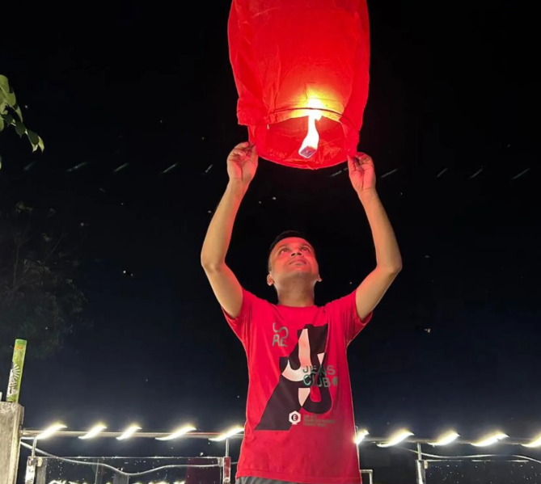
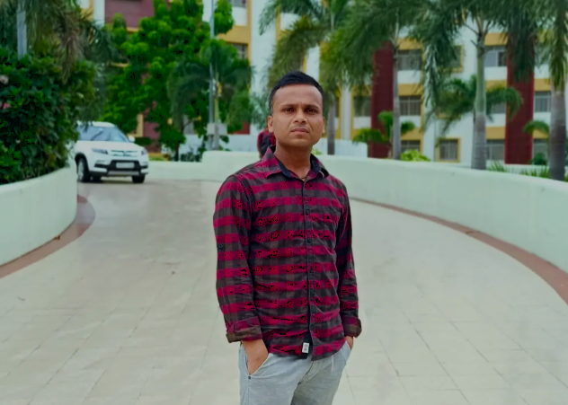
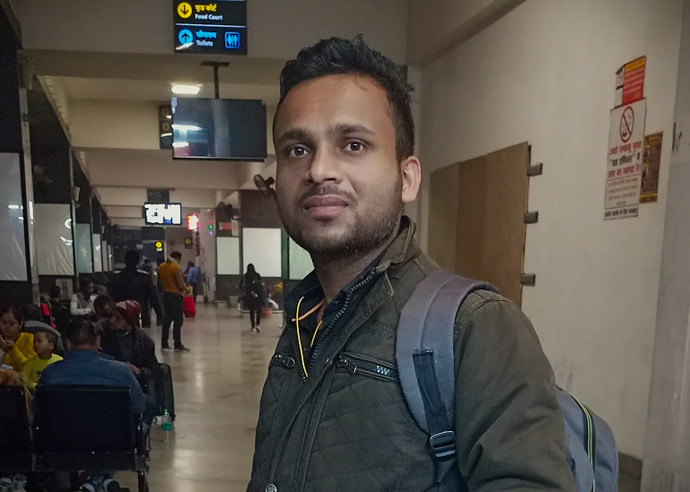
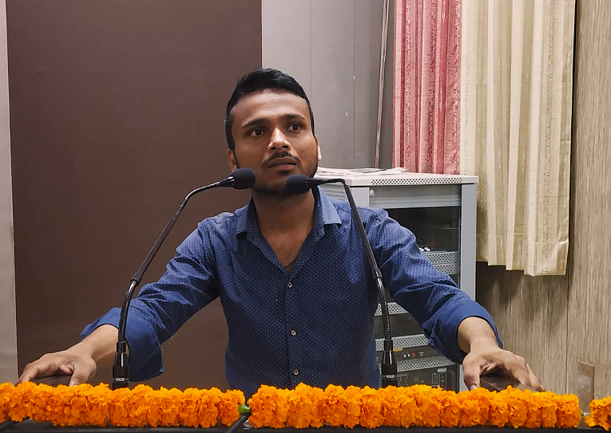
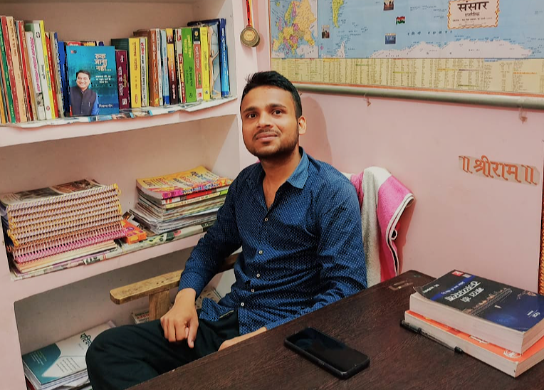

SHIVAM
SHARMA
Exploring politics, society, governance and the ideas that shape nations.
Understanding a Changing World
Politics is not confined to borders. Every nation is part of a larger global conversation.

India
New Delhi
Beyond the Books
A UPPSC aspirant and Political Science scholar with a deep interest in politics, governance, society, international affairs and public service. A former student of Allahabad University, my academic journey reflects discipline, curiosity and a sustained pursuit of excellence.
A Journey of
Becoming
Not a list of achievements, but a story of how curiosity slowly became discipline, discipline became understanding, and understanding became purpose.
Curiosity Came First
The journey began with a simple curiosity about people, society and the way the world around us works.
Learning to Question
Studying Political Science opened a deeper world of ideas, institutions, history and different ways of understanding society.
When Effort Became Recognition
Academic achievements, including a 4th rank in M.A. Final, became milestones along the way — not the destination.
From Learning to Purpose
The journey continues toward public service, with a growing interest in governance, society and understanding people.
Moments That
Shaped the Journey
A cinematic space for photographs, memories and milestones. Replace the placeholders below with real photographs.
More Than
The Achievements
A person is more than marks, ranks and titles. These are some of the things that shape me beyond the classroom.
What I'm Reading
Books, ideas and perspectives that keep me curious.
↗People Who Inspire Me
The conversations and people who have shaped the way I think.
↗Things I'm Learning
Understanding people, listening better and questioning my assumptions.
↗Small Moments
The ordinary moments that often become the most memorable ones.
↗Ideas Shape Nations
India: Democracy in Motion
Understanding the world leads back to understanding India — its Constitution, institutions, diversity and democratic promise.
The UPPSC
Journey
Connecting contemporary events with deeper political, historical and social understanding.
Polity & Governance
Understanding constitutional institutions and democratic governance.
International Relations
Exploring India's position in an interconnected world.
Society
Understanding people, communities and social transformation.
Political Science
Studying political theories, institutions and ideologies.
History
Learning from the experiences that shaped civilizations and nations.
Current Affairs
Connecting contemporary events with deeper political understanding.
Discovering Political Science
A growing curiosity about politics, society and the ideas that shape the world.
Learning Through University
Years of study, discipline and conversations that gradually shaped a deeper understanding of society and public life.
Understanding Society & Politics
Learning to look beyond textbooks and understand different perspectives, institutions and people.
A Journey Towards Public Service
Carrying that curiosity forward with a deeper sense of responsibility, knowledge and purpose.
A World of Different Systems,
One Shared Future
Political systems, cultures, governments and societies differ — yet their futures remain interconnected.


The Journey Is Still Being Written
From the classrooms of Allahabad University to the continuing pursuit of knowledge and public service, every achievement is only a milestone in a much larger journey.
What I'm Reading
Books, ideas and perspectives that keep me curious.

Some memories don't need a special occasion. They simply become special with time.




